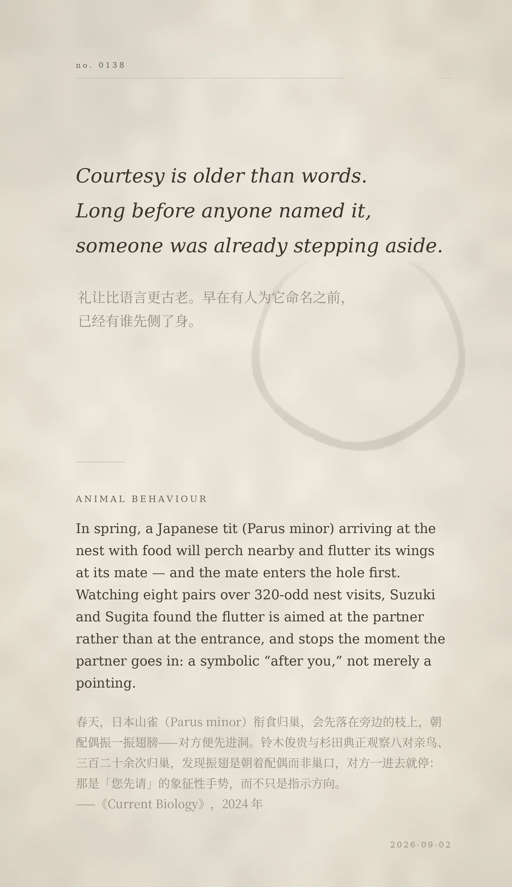

Courtesy is older than words. Long before anyone named it, someone was already stepping aside.（礼让比语言更古老。早在有人为它命名之前，已经有谁先侧了身。）
In spring, a Japanese tit (Parus minor) arriving at the nest with food will perch nearby and flutter its wings at its mate — and the mate enters the hole first. Watching eight pairs over 320-odd nest visits, Suzuki and Sugita found the flutter is aimed at the partner rather than at the entrance, and stops the moment the partner goes in: a symbolic “after you,” not merely a pointing.（春天，日本山雀衔食归巢，会先落在旁边的枝上，朝配偶振一振翅膀——对方便先进洞。铃木俊贵与杉田典正观察八对亲鸟、三百二十余次归巢，发现振翅是朝着配偶而非巢口，对方一进去就停：那是「您先请」的象征性手势，而不只是指示方向。——《Current Biology》，2024 年）
冷知识由执笔的模型自行查证。逐条断言、来源与所引原句存档在纯文字副本里，未经程序逐字校验，留作事后核实。